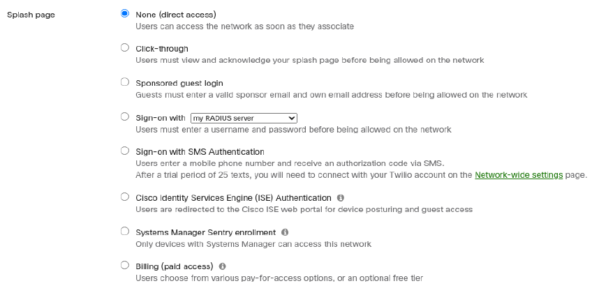
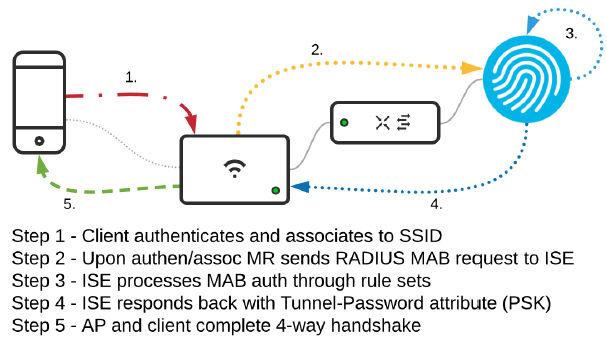
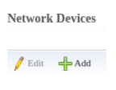
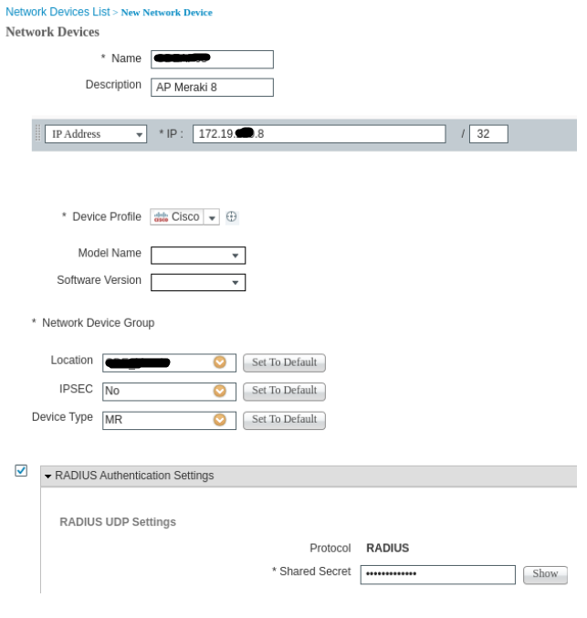
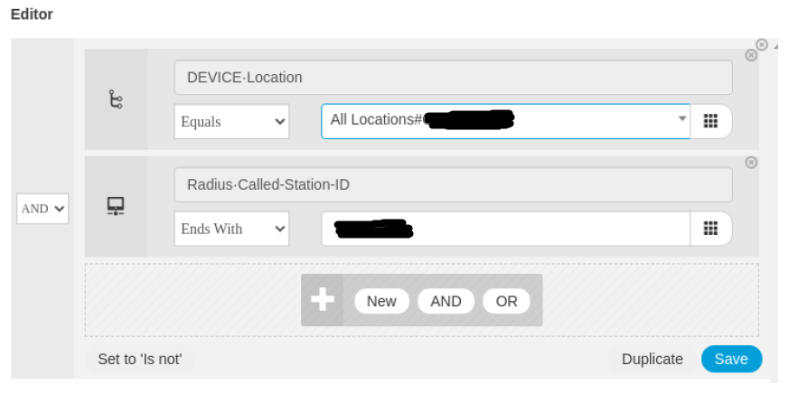
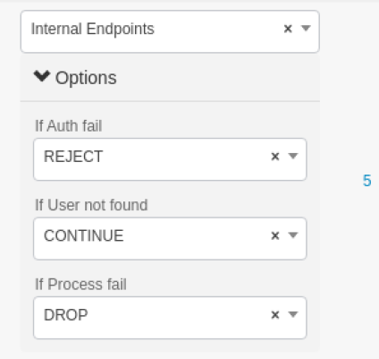
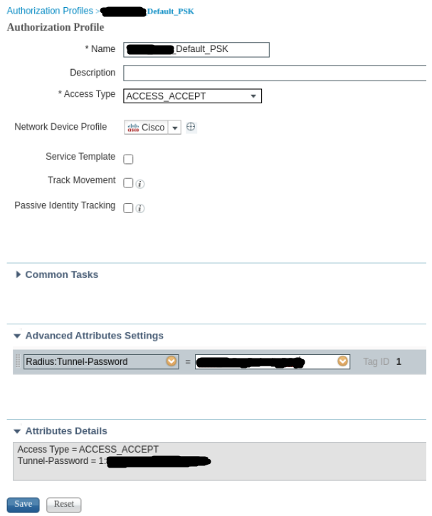
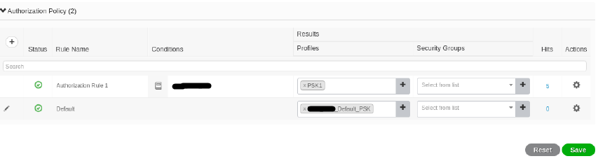
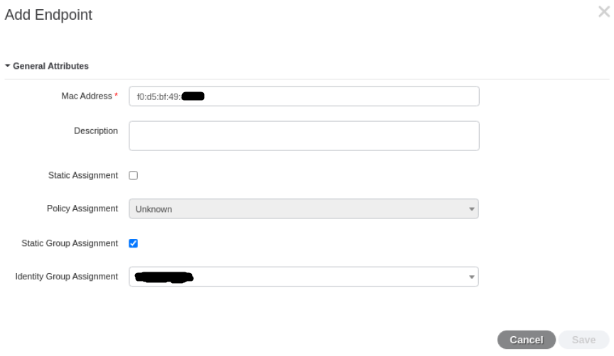

Authentification Wifi iPSK avec Cisco ISE
Je vais décrire dans cet article comment configurer Cisco ISE pour authentifier des équipements Wifi sur un réseau en utilisant le protocole RADIUS. Notamment, en fonctions de la PSK utiliser par un client Wifi, nous pourrons lui attribuer un VLAN spécifique. Ces PSK sont nommés iPSK (identity Pre Shared Key …
Je vais décrire dans cet article comment configurer Cisco ISE pour authentifier des équipements Wifi sur un réseau en utilisant le protocole RADIUS. Notamment, en fonctions de la PSK utiliser par un client Wifi, nous pourrons lui attribuer un VLAN spécifique. Ces PSK sont nommés iPSK (identity Pre Shared Key), justement grace au rôle qu'elles peuvent avoir dans l'attribution de l'identité de l'équipement, permettant de le placer dans le VLAN adequat.
Cisco ISE (Identity Service Engine) est une appliance proposant un grand nombre de fonctionnalités de sécurité. Il peut authentifier les utilisateurs sur le réseau (Wifi, câble ou VPN), il gère le contrôle d'accès, les politiques de groupe et peut également faire du device posturing (s'assurer qu'un équipement est à jour et que son anti-virus est activé avant de lui donner accès au réseau). Les fonctionnalités sont assez complètes et son utilisation demande une certaine expertise.
Pour cet article, le réseau Wifi sur lequel on s'appuit est un réseau Meraki mais je ne doute pas que le fonctionnement doit être grandement similaire avec d'autres constructeurs.
Configuration Meraki
La configuration du SSID se fait dans le menu Wireless > Access Control en choisissant le SSID cible dans le menu déroulant en haut de la page.
Network Access
Cette section permet de choisir le mode d'association des équipements. L'option à choisir ici est Identity PSK with Radius. Le chiffrement se fait en WPA2. Si vous avez plusieurs bornes, je vous invite à activer le mode 802.11r (fast-transition) qui améliore les performances lors du roaming.

Splash Page
Nous n'utilisons pas de Splash Page sur ce SSID. Une fois associé et authentifié, l'accès au réseau se fait directement.
Configuration Radius
Lors du choix IPSK with Radius dans la section 'Network Access', une nouvelle section dédiée à la configuration Radius apparaît. On entre les adresses des serveurs Radius, ports et secrets. RADIUS testing est désactivé et le support de CoA est activé. Les serveurs Radius accounting sont activés et paramétrés.

Assignement de l'IP
L'assignement de l'adresse IP de l'équipement se fait en mode Bridge. Les équipements se retrouvent sur le VLAN qui leur est assigné et peuvent recevoir une IP en DHCP via, par exemple, le serveur Cisco ISE. Le VLAN tagging est activé avec un VLAN par défaut (ici XXX).

Configuration Cisco ISE
Voici le flux de données lors d'une authentification iPSK sur un serveur Cisco ISE. Cette image est directement extraite de la documentation officielle Meraki.
Ajout des AP et assignation à un groupe
Sur ISE, aller dans Administration > Network Ressources > Network Devices et cliquer sur Add
Remplir les champs pour l'AP à intégrer : Nom de l'AP et adresse IP.
Créer une nouvelle Location du nom du lieu où sont placées les AP (par exemple Headquarter ou Agence_Rennes) et un device type MR. Ce device type permettra d'y placer l'ensemble des AP de type Meraki MR. La localisation "Headquarters" va permettre de faire correspondre l'authentification des clients avec la bonne Policy Set (jeu de politique), que l'on verra plus tard.
Cocher Radius Authentication Settings et paramétrer un secret pour ce serveur Radius. Ce secret est celui utilisé dans la configuration Radius du SSID sur Meraki.
Créer une Policy Set
Créer une nouvelle Policy Set avec la condition Device>Location et sélectionner la localisation Headquarter créée précédemment. Ajouter une seconde condition Radius > Called-Station-ID Ends_With "Nom_du_SSID".
J'insiste sur le fait de bien mettre la condition "Ends_With" et nom "Equals" car lors de l'authentification Radius, le nom du SSID envoyé par MEraki sera précédé d'autres informations. En mettant "Equals" l'authentification ne peut pas fonctionner.
Sauvegarder puis se rendre dans la policy en utilisant la flèche à l'extrémité droite. Aller dans Authentication Policy et paramétrer la règle comme ci-dessous. S'assurer que le menu déroulant est bien positionné sur Internal Endpoints et que l'option If User not found Continue est bien sélectionnée. Cette option permet de continuer à vérifier l'authentification d’un équipement qui ne serait pas valide sur cette policy.
Se rendre ensuite dans Authorization Policy. Sur la règle par défaut, supprimer Deny Access et cliquer sur l'icône + pour créer un nouveau profil avec les paramètres ci-dessous. Dans Advanced Attributes, sélectionner Radius:Tunnel-Password. Entrer la PSK utilisée par défaut sur ce SSID puis sauvegarder.
Sélectionner ce profil dans la règle par défaut puis sauvegarder.
Créer un Identity Group
Aller dans Work Center > Guest Access > Id Group. Cliquer sur Add pour ajouter un nouveau groupe qui contiendra les équipements autorisé à s'authentifier sur le réseau Wifi.
Créer une Policy Set pour chaque PSK
A partir de maintenant, nous pouvons créer une Policy Set pour chaque groupe d'équipement qui utilisera sa propre iPSK. Chaque iPSK identifiera un type d'équipement et le VLAN sur lequel il sera placé.
Ici, nous allons créer la policy set pour le VLAN de bureautique (VLAN 84). Aller dans Policy > Policy Elements > Results > Authorization > Authorization Profiles. Cliquer sur Add et créer un nouveau profil. C’est celui-ci qui sera utilisé pour surcharger le VLAN par défaut si besoin. Les champs importants sont : - Nom du profil - Common Tasks > VLAN > 84 - Advances Attributes Settings > Radius:Tunnel-Password ⇒ Entrer la PSK pour les équipements de bureautique (PC portable en général).

Aller ensuite dans Policy > Policy Sets et éditer la Policy Set créée précédemment. Dans la section Authorization Rules ajouter une nouvelle règle au-dessus de la règle par défaut.

Nommer cette règle et lui appliquer la condition suivante, en choissant le groupe créé dans la section Créer un Identity Group :

Appliquer ensuite le profil d'autorisation PSK1 créé en juste au-dessus et sauvegarder.
Ajouter des éuipements au groupe
Aller dans Context Visibility > Endpoints. Ajouter un nouvel équipement en prenant soin de l placer dans le groupe créer précédement.
Cette technique d'authentification permet donc de placer les équipements/utilisateurs sur des VLANs différents en fonction de la PSK utilisée, sans créer un SSID différent pour chaque VLAN.
En effet, il est déconseillé de diffuser plus de 5 SSID par AP ou par zone afin de limiter les interférences et optimiser la qualité du signal, notamment lorsqu'on souhaite y faire transiter de la voix et/ou faire du roaming. Grâce à iPSK, nous pouvons segmenter les utilisateurs dans différents VLAN en limitant le nombre de SSID diffusé.